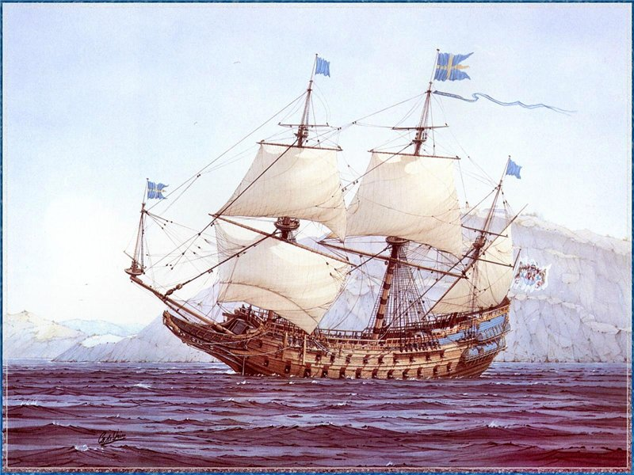

14.1. Каноны и научно обоснованные методы решения частных задач
Том 4 · osnovy-sociologii-tom-4.pdf · стр. 235 (кандидат) · Кандидат страницы PDF; требуется сверка · источник: PDF/DOC данной редакции.
Содержит авторские утверждения; их фактическая достоверность оценивается отдельно.
14.1. Каноны и научно обоснованные методы решения частных задач
Сказанное в разделе 13 позволяет указать ещё на одни порок исторически сложившейся науки и системы образования, который не был обстоятельно рассмотрен в разделах 10.6 и 10.7 настоящего курса (Часть 3 — том 3). Это — взаимная изолированность научных дисциплин, вследствие чего из мировосприятия и миропонимания исчезают явления, в которых проявляются так называемые «междисциплинарные связи» наук. На примере раздела 13 видно, что излагаемое в нём может быть выявлено в Жизни и по́нято только, если физика, физиология организма человека, психология (личностная и коллективная), этика и языкознание перестают восприниматься как взаимно изолированные научные дисциплины. Но вопреки реальности жизни в системе образования они предстают именно как взаимно изолированные научные дисциплины, разделённые непреодолимыми «междисциплинарными пропастями».
И если с утверждением о наличии взаимосвязей физики и физиологии большинство может согласиться без особого напряжения, то вопрос о взаимосвязях физики и психологии, физики и языкознания для большинства получивших даже высшее образование — вопрос, как минимум вызывающий недоумение, а как максимум — мысли об интеллектуальной состоятельности тех, кто его ставит. Это — яркая иллюстрация того, что система образования формирует калейдоскопическое мировосприятие и миропонимание.
Поскольку разрыв междисциплинарных связей в практической деятельности влечёт за собой множество мелких и больших неприятностей, то проблема некоторым образом осознаётся, и в современной науке это получило название «кризис фрагментации знания». Так в разделе «Области исследований» Паспорта специальности ВАК РФ «Социальная философия» — 09.00.11 «“кризис фрагментации” современного обществознания и пути его преодоления» — одна из рекомендуемых актуальных тем. Однако «кризис фрагментации» — это проблема не только исключительно обществоведения, но проблема исторически сложившейся науки в целом. И этот кризис проникает в глубины всех без исключения сфер профессиональной деятельности, для которых готовит кадры система образования. При этом сама система образования — один из главных факторов, порождающих этот кризис, поскольку в наши дни в научно-исследовательскую деятельность и в сферы приложения реальных и мнимых достижений науки не войти, предварительно не получив базового образования и квалификационного диплома, дающего юридическое право работать по профессиии.
Если анализировать причины такого положения дел, то одна из наиболее весомых причин — изменение характера высшего профессионального образования в период, начиная примерно с середины до конца XIX века, и вызванное этим изменение путей развития мировой науки в целом.
Ранее этого времени в основе высшего профессионального образования помимо текстов всё же лежала личностная культура чувств и интеллектуальная деятельность обучаемых, направленные на изучение канонов, т.е. сводов обязательных к исполнению правил и запретов, регламентирующих профессиональную деятельность в соответствующей сфере. Сами же каноны подчас складывались веками, а в основе их развития и появления новых канонов лежали интуиция и чувство меры, которые предлагали новые решения, и практика, которая отвергала ошибочные решения.
Так были развиты архитектурные каноны, каноны медицины1, каноны корабельной архитектуры и иных видов инженерной деятельности, канон судовождения (он получил название «хорошая морская практика») и т.п.
Следование выработанному таким образом канону той или иной профессиональной деятельности гарантировало некоторый приемлемый для своего времени уровень качества соответствующих видов деятельности и их безопасности. А отступление от канонов не гарантировало ничего и в ряде случаев сопровождалось катастрофами.
Один из наиболее известных примеров такого рода трагического по своим последствиям отступничества от канона — шведский линейный корабль «Ваза», названный в честь правившей в то время династии. Он был построен вопреки канону того времени строительства кораблей этого класса, поскольку заказчик — шведский король Густав II Адольф Великий (1594 — 1632, на престоле с 1611 г.) — настоял на этом, ибо хотел иметь самый быстроходный и самый сильный в мире корабль. В итоге такого политического давления корпус «Вазы» был у́же, нежели этого требовал канон, осадка тоже была меньше, он нёс паруса большей площади, нежели это допускал канон, на нём были установлены более тяжелые пушки, нежели предполагал канон. Все эти отступления от выработанного канона не были подкреплены какими-либо расчётами или экспериментами на основе научно обоснованных инженерных методов, которых в то время (1625 г. — выдача заказа и разработка проекта) просто не существовало. С позиций же владения инженерными знаниями наших дней отступничество от канона при строительстве «Вазы» предстаёт в следующем виде.
Уменьшение ширины корабля ведёт к снижению сопротивления воды движению и соответственно — к росту скорости хода при затратах той же мощности, но имеет следствием уменьшение характеристик поперечной остойчивости. Характеристики поперечной начальной остойчивости корабля (т.е. при нулевом крене) связаны с моментом инерции площади его действующей ватерлинии относительно продольной оси, который определяется по формуле:
$I_{x} = \frac{2}{3}\int_{}^{}{y^{3}\text{dx}}$,
где интегрирование ведётся по длине корабля (ось x) по ватерлинии, а «y» — удаление наружной поверхности борта от продольной оси симметрии (совпадает с осью x), измеряемое в плоскости действующей ватерлинии в соответствующем поперечном сечении («y» изменяется по длине корабля), .
Поскольку «y» под интегралом находится в третьей степени, то казалось бы незначительное уменьшение ширины корабля может привести к недопустимому снижению поперечной остойчивости и повлечь трагические последствия. Кроме того, из курса статики корабля известно, что любой дополнительный груз, размещаемый выше действующей ватерлинии, ухудшает остойчивость корабля: в данном случае это касается артиллерийских орудий, мачт, рей, такелажа и парусного вооружения, более тяжёлых, нежели допускал канон.
Улучшить остойчивость за счёт балластировки не представлялось возможным, поскольку в угоду достижению превосходства в скорости осадка «Вазы» также была меньше, чем того требовал канон. Соответственно и высота корпуса также была недостаточной для того, чтобы корабль мог принять необходимое количество балласта (в случае приёма балласта в необходимом количестве вследствие увеличения осадки пушечные порты нижней палубы «Вазы» оказались бы слишком низко над водой либо вообще ушли бы под воду даже при отсутствии крена).
Увеличение площади парусов «Вазы» в угоду достижению большей скорости имело следствием увеличение кренящего момента при воздействии ветра, что требовало увеличения остойчивости, ухудшенной: 1) сужением корпуса корабля, 2) недостаточной балластировкой при ограниченной осадке и 3) принятием на борт более тяжёлых орудий, установкой более тяжелых мачт, рей, такелажа и парусного вооружения.
В результате неправомерного отступничества от канона в первом же плавании 10 августа 1628 г. при слабом, но порывистом ветре налетевший шквал накренил корабль, шедший даже не под полными парусами2, так, что он черпанул воду открытыми пушечными портами нижней батарейной палубы (этот момент изобразил художник на рисунке ниже), после чего лёг на борт и затонул, погубив порядка 50 человек из примерно 100 человек экипажа и членов их семей, приглашённых на борт в первое плавание (по другим данным погибло около 170 человек). Корабль не спасло даже то обстоятельство, что, как сообщают некоторые источники, в тайне от короля ширина корпуса «Вазы» была увеличена его строителем на 2,5 м3.

Как сообщает Википедия, «только через две недели после трагедии новость о гибели «Вазы» достигла короля Швеции Густава II Адольфа, который находился тогда в Пруссии. Король отослал в Стокгольм депешу, в которой предполагал, что причиной гибели корабля стали глупость и невежество, требовал провести следствие и наказать виновных. Следствие велось на высшем уровне, в Шведском Государственном совете. (…)Никаких результатов не принесли и допросы кораблестроителей, под руководством которых строился «Ваза». Основная сложность заключалась в том, что фактический строитель корабля Хенрик Хюбертссон умер за год до катастрофы. Ответственные за верфь, где был построен «Ваза», судостроитель Хейн Якобссон и арендатор верфи Арент де Грот поклялись в своей невиновности, указав, что корабль был построен по тем размерам, которые утвердил лично король Густав II Адольф. И на борту было то количество пушек, которое стояло в контракте.
Привлекать к следствию самого короля в Государственном совете не решились. В итоге никто не был признан виновным и никто не был осуждён за катастрофу».
Потом об этом позоре предпочитали не вспоминать в течение нескольких столетий. Нашли корабль на дне моря в 1961 г., подняли, обработали консервантами, в течение 30 лет вели реставрационные работы, и с 1990 г. он экспонируется в музее своего имени в Стокгольме4…
Освоение канонов профессиональной деятельности в те времена протекало на основе расширения кругозора обучаемых, охватывавшего и другие отрасли знания, с которыми канон профессиональной деятельности был так или иначе связан прямо или опосредованно: именно в этом изначально был смысл термина «университетское образование» (слово «университет» происходит от латинского «universus» — «всё», иначе говоря, — «всеобщность»). Т.е. в действительно университетском образовании профессионально специализированные знания — всего лишь более детально проработанные фрагменты общей и целостной картины целостного мира, которую рисовала наука соответствующей эпохи и которую в целом обязаны были знать все выпускники университетов.
И далее уже в своей профессиональной деятельности именно на основе широкого кругозора профессионалы разных отраслей могли понять друг друга при осуществлении совместными усилиями комплексных проектов, частные задачи в которых решались на основе соответствующих канонов.
Кроме того, у тех, кто опьянён научно обоснованными методами решения разного рода частных задач наших дней, в действительности нет причин превозноситься над профессионалами прошлых эпох, поскольку некоторые задачи, которые успешно и неоднократно решались в прошлые эпохи, не могут быть решены на основе научно обоснованных методов наших дней.
Личностная же культура чувств и психической в целом деятельности, в которой чувство меры и интуиция были главными факторами выработки новых канонов и модификации ранее существовавших, в ряде случаев позволяла делать то, что не позволяют инженерные методы наших дней. Так задача «построить амфитеатр, в котором звук разрываемой на сцене бумаги или шёпот актёра были бы слышны на всех зрительских местах, включая задние ряды, столь же отчётливо, как и на сцене», — за пределами возможностей инженерных методов наших дней… Однако такие амфитеатры древние греки строили практически везде, где жили. В наши дни эта задача решается посредством микрофонов, электроники, звуковоспроизводящей аппаратуры, которую размещают в разных местах зрительного зала. И ценители музыкального искусства знают, что звучание живого голоса или музыкального инструмента, не прошедшее через электронику и управляющее воздействие звукооператоров — это одно, а техническое звуковоспроизведение, подменяющее живую музыку, — это нечто, качественно иное. Т.е. имеет место определённый регресс качества жизни на фоне научно-технического прогресса.
Реальность же такова, что с середины XIX века в высшее профессиональное образование стали интенсивно входить научные методы обеспечения профессиональной деятельности в соответствующих отраслях — методы решения частных задач в каждой из них. Они стали вытеснять из процесса обучения изучение канонов, в результате чего устаревшие каноны прошлых эпох остались в прошлом, а новые перестали создаваться. Так каноны исчезли из образовательного процесса, и как следствие, — из практической деятельности.
Это повлекло за собой множество ошибок деятельности, которые и выразились в глобальном биосферно-социальном (экологическом) кризисе:
В прошлом канон выражал допустимые возможности взаимосвязей частностей в целостности того или иного дела (либо техносферного объекта) и тем самым гарантировал кроме удовлетворения прямых требований заказчика, предъявляемых по оглашению, удовлетворение по умолчанию множества других жизненно важных требований, о необходимости удовлетворения которых ни заказчик, ни исполнитель могли даже и не подозревать.
С отказом от канонов и замещением их научно обоснованными методами решения частных задач проектант (конструктор), опираясь на них, может удовлетворить требования, выставленные заказчиком в прямой форме по оглашению, но при этом, если он не имеет за душой ни чувства меры, ни интуиции, он способен породить инженерное сооружение, которое само является генератором опасностей и бед, и порождает беды при воздействии на него не учтённых при проектировании внешних факторов.
В эпоху господства научно обоснованных методов решения частных задач роль разработчиков и хранителей канонов отчасти взяли на себя некоторые (но не все) научные школы прикладной науки и инженерные школы проектирования тех или иных объектов техносферы. Такого рода школы складываются в тех или иных фирмах, существующих достаточно долго для того, чтобы школа успела сформироваться и доказать свою деловую состоятельность в конкурентной борьбе на рынке соответствующей продукции5. Но в наши дни многие такого рода школы, сложившиеся в прошлом, рискуют быть убитыми «аутсорсингом»6. Аутсорсинг реально опасен при создании образцов наукоёмкой продукции.
Предположим, что авиационная фирма проектирует новый самолёт. Для нового самолёта требуются какие-то новые агрегаты. Их может спроектировать соответствующее подразделение фирмы, но проектные работы можно заказать на стороне, что может показаться коммерчески предпочтительным. Однако если посторонний заказчик принадлежит другой отрасли, то ему свойственен не авиационный менталитет. Вследствие этого он, как добросовестный и квалифицированный исполнитель заказа, в проекте агрегата удовлетворит все требования заказчика, выставленные в прямой форме. Но если не всё, то многое из того, что заказчик не оговорил в контракте прямо, будет сделано вопреки авиационному менталитету — в соответствии с менталитетом той сферы деятельности, в которой работает исполнитель. В результате спроектированный им агрегат, формально и юридически удовлетворяющий всем требованиям заказчика, выраженным в прямой форме, окажется в большей или меньшей мере непригодным для использования в проектируемом самолёте. Если количество таких агрегатов, спроектированных на принципах аутсорсинга, оказывается закритическим, то расходы на доведение самолёта «до ума» могут оказаться многократно превышающим экономию при его разработке на принципе массового использования аутсорсинга7.
Т.е. историческая практика показывает, что выработка и освоение научно обоснованных методов решения частных задач — хотя и необходимое условие для безопасной деятельности в современных условиях, однако явно недостаточное.
При этом:
Образование становится всё более узкоспециализированным, а профессионалов по координации деятельности узких специалистов, порождаемых системой, не готовит никто.
Образование по-прежнему носит характер загрузки в психику обучаемого того или иного свода знаний фактоописательного характера, но выпускники вузов — даже по специальностям декларативно научно-исследовательского профиля — в своём большинстве реально не владеют методологией познания и творчества, которая бы позволяла им самостоятельно выявлять «междициплинарные пропасти» и заполнять их достоверным знанием в ходе проведения фундаментальных исследований или решения прикладных задач в комплексных проектах.
Положение усугубляется тем, что в дальнейшем управленческий корпус формируется из таких узко специализированных профессионалов, которые за пределами своей бывшей профессии оказываются практически полностью невежественными, вследствие чего вырабатывают и принимают к исполнению порочные решения: см. раздел 13.1 — о том, как в социально-управленческой практике по невежеству системно-массово нарушаются объективные закономерности всех шести групп, которым подчинено бытие человечества, культурно своеобразных обществ и индивидов в его составе.
И такие широко известные катастрофы, как гибель «Титаника» (1912 г.), авария на АЭС «Фукусима» (2011 г., Япония), а также многие другие аварии и катастрофы, глобальный биосферно-социальный (экологический) кризис как интегральное явление — это во многом результат применения научно обоснованных методов решения частных задач узкими специалистами в отсутствие сложившихся канонов, гарантирующих безопасность, усугублённого неразвитостью интуиции и чувства меры у проектировщиков, что не позволило им с помощью научно обоснованных методов, которые сами по себе не гарантируют ничего, создавать безопасные объекты и эксплуатировать их безопасным образом. В эпоху же господства канонов даже просто тупое, лишённое творчества следование канону позволяло создать если не шедевр технической мысли, то вполне функциональный и безопасный в эксплуатации объект.
Так на неизбежность гибели «Титаника» в случае не очень серьёзной аварии указывал русский кораблестроитель В.П. Костенко, который в период разработки проекта этого лайнера был в командировке в Великобритании и курировал строительство заказанного Россией крейсера «Рюрик». Когда его ознакомили с чертежами «Титаника», он указал на конструктивные недостатки, которые впоследствии сыграли роковую роль в судьбе этого корабля: водонепроницаемые переборки не были доведены до верхней палубы, а внутренняя палуба, до которой они доходили, не была водонепроницаемой. Эти конструктивные особенности проекта вели к тому, что при наполнении нескольких отсеков при аварийном затоплении и возникновении дифферента8 — вода начинала перетекать в соседний отсек через верхний край «водонепроницаемой» переборки, что неизбежно вело к гибели корабля. Но проектанты «Титаника» высокомерно отвергли замечания В.П. Костенко, сославшись на необоснованность практикой судовождения и навигационных происшествий столь «завышенных требований» к непотопляемости гражданского судна, которые мешают обеспечить комфорт пассажиров и удобство работы обслуживающего пассажиров персонала9. Тем не менее, под воздействием гибели «Титаника» эти «завышенные требования» впоследствии стали общепризнанной мировой юридически обязывающей нормой проектирования всех без исключения достаточно больших морских судов.
Кроме того, «Титаник» — жертва политики экономического протекционизма. Дело в том, что основными конкурентами «Титаника» и двух других лайнеров, построенных по этому проекту, были «Мавритания» и «Лузитания» (введены в эксплуатацию в 1907 г.) — лайнеры компании «Кунард лайн». Это были самые быстроходные трансатлантические лайнеры того времени: они пересекали Атлантику менее, чем за 5 суток со средней скоростью около 24 — 25 узлов, а в 1909 г. «Мавритания» установила свой собственный рекорд — 26,06 узла. Только в 1929 г. «Мавританию» смог превзойти в скорости новейший германский лайнер «Бремен».
Это не значит, что проектанты «Мавритании» на четверть века обогнали уровень развития техники. Её рекорды было результатом того, что «Кунард лайн», пообещав британскому адмиралтейству в случае войны передать оба лайнера военно-морскому флоту в качестве вспомогательных крейсеров, добилась государственных субсидий на их строительство и эксплуатацию10. Благодаря этому, при достигнутом к тому времени уровне развития техники, «Кунард лайн» смогла построить и окупить в ходе эксплуатации лайнеры, с довольно высоким уровнем эксплуатационных издержек, обусловленным тем, что их экономичность во многом была принесена в жертву скорости11. Третий лайнер «Кунард лайн», «Аквитания» (введён в эксплуатацию в конце мая 1914 г.), который был построен для совместной работы на трансатлантической линии в одном расписании вместе с «Мавританией» и «Лузитанией», но без государственных субсидий, развивал уже́ не рекордную скорость: его скорость была в пределах 23 узлов. По размерам он превосходил и «Мавританию», и «Титаник», а его рентабельность за счёт сокращения эксплуатационных издержек в расчёте на одного пассажира была выше «рентабельности» обоих кунардовских рекордсменов.
Хотя владельцы «Титаника» номинально-юридически были британской фирмой, но капитал в ней был американский, и они не смогли получить государственные субсидии ни от правительства Британии, ни от правительства США, и потому вынуждены были добиваться в проекте наивысшей рентабельности эксплуатации, в том числе и за счёт отказа от ряда конструктивных мер по обеспечению безопасности. В частности вследствие этого в конструкции корпуса «Титаника» была применена предельно дешёвая низкосортная сталь12 и поперечные водонепроницаемые переборки не были доведены до верхней палубы13, а палуба, до которой доходили водонепроницаемые переборки, не была водонепроницаемой. Кроме того хранилища угля (угольные ямы) на «Титанике» были расположены вдоль поперечных водонепроницаемых переборок, чтобы сократить длину путей транспортировки угля к топкам котлов, уменьшить объём котельных отделений и численность кочегаров, вследствие чего котельные отделения примыкали к наружному борту. В отличие от «Титаника» на «Мавритании» угольные ямы были расположены вдоль бортов и отделены от котельных отделений продольными водонепроницаемыми переборками, как это было принято на больших военных кораблях того времени. Если бы «Титаник» имел такую же планировку машинно-котельных отделений, как и «Мавритания», то для него было бы организационно-технически невозможным затопление носового котельного отделения, сыгравшее роковую при тех повреждениях, которые он реально получил в результате столкновения с айсбергом в ночь 14/15 апреля 1912 г.14: если бы носовое котельное отделение сохранило водонепроницаемость, то он остался бы на плаву.
В судьбах погибших «Вазы» и «Титаника» выразились следующие обстоятельства:
В матрице возможностей (Божьем Предопределении бытия) для каждой сферы деятельности людей существует некоторое множество вариантов осуществления проектов, попадание в которое гарантируют высокий уровень безопасности15.
Каноны во всех сферах деятельности более или менее полно и точно описывают эти множества вариантов безопасной деятельности.
Научно обоснованные методы решения частных задач ни сами по себе, ни в совокупности не порождают канона и не гарантируют, что в конкретном проекте реализуется один из вариантов, принадлежащий объективно существующему множеству безопасности.
И судьбы «Вазы» и «Титаника» — не единственные печальные иллюстрации к высказанным выше положениям о соотношении матрицы бытия, канонов деятельности, научно обоснованных методов.
Так АЭС «Фукусима» была рассчитана на обеспечение безопасности при землетрясениях с магнитудой до 7, но размещена в районе, где бывают землетрясения с предельно возможной магнитудой 9. И кроме того она была совершенно конструктивно не защищена от цунами, в том числе и от экстремальных, которые тоже бывают в этом районе. Т.е. катастрофа была запрограммирована общей культурой проектирования и строительства такого рода объектов, хотя в проектировании применялись в принципе работоспособные научно обоснованные методы решения частных задач, необходимых для осуществления комплексного проекта.
Но точно также общей культурой проектирования, строительства и эксплуатации была запрограммирована и Чернобыльская катастрофа.
Эти и многие другие примеры показывают, что владение научно обоснованными методами не гарантирует безопасности, поскольку методы применяются в русле объемлющей их культуры пользования ими. А такого рода культуры не являются ни предметом научно состоятельного анализа, ни предметом изучения в вузах.
Иначе говоря:
Успешное решение на основе научно обоснованных методов совокупности частных задач в ходе осуществления комплексного проекта является условием необходимым, но недостаточным для того, чтобы проект был успешен и безопасен.
Это утверждение касается как техносферных проектов, так и разного рода социокультурных — сугубо гуманитарных16.
Также надо понимать, что качество жизни общества, развившего техносферу на основе коллективного труда узко специализированных профессионалов, определяется не их профессионализмом и добросовестностью в труде, а концепцией государственного управления и качеством управления, в ней достигаемым. В таких условиях качество жизни общества обусловлено не только пресловутой «ролью личности в истории», но социолого-экономическими теориями, лежащими в основе профессионального образования, полученного госчиновниками, депутатами, топ-менеджерами и менеджерами, работниками СМИ и банковской системы. И следует признать, что их образование тоже носит узко специализированный характер и лежит вне какой-либо объемлющей культуры, которая подобно канону в прошлом гарантировала безопасность их деятельности для общества. В отличие от инженерного дела положение усугубляется тем, что многие социолого-экономические теории, лежащие в основе политики во всех её проявлениях, — неадекватны жизненной реальности и тем задачам, необходимость решения которых политики провозглашают и с чем согласно общество.
Именно эта особенность господствующих социолого-экономических теорий, выражаясь в политической практике и практике финансовой и хозяйственной деятельности, и является главной причиной воспроизводства глобального биосферно-социального кризиса во всех его локальных и глобальных проявлениях.
Т.е. следует согласиться с мнением одного из персонажей М.А. Булгакова, — профессора Преображенского, — разрухе в жизни предшествует разруха в головах17. Поэтому, если общество переживает затяжной системный кризис, то это результат того, что «мэйн-стрим» культивируемой обществом науки и господствующее в обществе миропонимание, формируемое его системой образования, неадекватны Объективной реальности и вследствие этого генерируют проблемы. Вследствие этого они не пригодны для преодоления кризиса: для этого необходима альтернатива, как объясняющая ошибки «мэйн-стрима», так и дающая адекватное представление о механизме генерации проблем и путях их разрешения.
Соответственно возрождение России и преодоление глобального биосферно-социального кризиса человечества безальтернативно требует построения иной системы образования — дающей полноту и целостность миропонимания, в котором профессиональный знания — всего лишь наиболее детально проработанный фрагмент.
Но до того времени, пока она не будет построена и не начнёт действовать, ущерб, нанесённый миропониманию и психике в целом исторически сложившейся системой образования, всем придётся преодолевать на основе самообразования. А для этого необходимо выработать определённые требования к системе образования и самообразования.
Так один из трактатов средневекового врача Ибн Сины (Ави-Цены) (980 — 1037) в переводе на русский прямо называется «Канон врачебной науки».↩
На рисунке ниже это показано исторически достоверно: на фок- и грот- мачтах брам-реи (третий ярус рей) — без парусов; грот (нижний парус на средней мачте) — убран; на бизань-мачте (третьей по счёту с носа) — реи без парусов; на блинда-стеньге (дополнительная мачта, установленная на бушприте) бом-блинда рей — без паруса, под бушпритом блинда-рей — без паруса.↩
См. интернет-ресурсы: http://webmandry.com/evropa/shvetsiya/muzei-stokgolma.-korabl-muzey-vasa-vaza-edinstvennyy-v-mire-sohranivshiysya-parusnyy-korabl-nachala-xvii-stoletiya.html; http://stockholm-info.ru/index.php/museums/vasa.html и др.
Для сопоставления. По проекту, разработанному российским императором Петром Великим (1672 — 1725), был построен линейный корабль «Ингерманланд» (введён в строй в 1715 г.), близкий по размерам к «Вазе» и обладавший парусным вооружением аналогичным по конструкции и составу парусов:
«Ваза»: водоизмещение приблизительно — 1200 т; длина габаритная с бушпритом — 69 м, длина корпуса по ватерлинии — 47,7 м; ширина — 11,2 м; осадка — 4,7 м; площадь парусов — около 1200 кв. м, 64 орудия (самые тяжёлые — 24 шт. 48-фунтовых), экипаж — 120 — 145 человек (собственно моряки) + 300 человек морской пехоты.
«Ингерманланд»: водоизмещение — 1420 т; длина корпуса по ватерлинии — 46,4 м; ширина — 12,3 м; осадка — 5,4 м, площадь парусов — нет данных (но вряд ли она была больше, чем на «Вазе», если ориентироваться на площадь парусов кораблей 66-пушечного ранга той эпохи — так «La Couronne» — 72-пушечный французский корабль 1695 г. постройки имел площадь парусов около 1000 кв. м), 64 орудия (самые тяжёлые — 24 шт. 32-фунтовых, по другим данным — 26 шт. 24-фунтовых), экипаж — 470 человек).
Порочность проекта «Вазы» должна быть понятна из приведённых выше данных: «Ингерманланд» имеет бо́льшие ширину и осадку и большее водоизмещение (бо́льшая осадка и бо́льшее водоизмещение подразумевают размещение достаточного балласта, большего по массе и по доле в весовой нагрузке, нежели на «Вазе»), и меньший вес артиллерийского вооружения, что в совокупности, обеспечивало ему характеристики остойчивости, гарантирующие безопасность плавания при управлении, адекватном погодным условиям (в отличие от «Вазы»).
Корабль после проведения испытаний был признан Петром «наипаче удачным», и это не было выражением царского самодовольства, поскольку он послужил прототипом для строительства кораблей этого ранга на последующие более, чем полвека: т.е. по сути стал в России воплощением канона класса 66-пушечных кораблей, ставшего основным типом линейных кораблей в Русском флоте в XVIII в. На нём Пётр держал свой флаг, когда лично командовал эскадрами Балтийского флота и объединёнными эскадрами союзных флотов. «Ингерманланд» стал любимым кораблём царя. Пётр издал указ, в котором повелел хранить корабль вечно. Однако после смерти Петра, с 1725 г. «Ингерманланд» в море не выходил и его не поддерживали в исправности. К 1738 г. его корпус в почти пресной воде Невской губы прогнил, а во время наводнения 1738 корабль был унесён ветром и течением с места стоянки в Кронштадтской гавани, выброшен на мель и залит водой. Спустя год — два «Ингерманланд» разобрали на дрова. Поэтому музея «Ингерманланда» в Кронштадте нет…
Более обстоятельно об «Ингерманланде» как о воплощённом каноне 66-пушечного корабля см., например: Лебедев А.А. Петровский линейный корабль «Ингерманланд» в судьбах Российского флота.
Минимальный срок становления школы обусловлен жизненным циклом её продукции. На протяжении этого минимального срока становления школы необходимо спроектировать и внедрить в эксплуатацию одно поколение продукции. Далее на основе анализа опыта производства и эксплуатации первого поколения необходимо выявить конструктивные, технологические и эксплуатационные пороки первого поколения. На этой основе должны быть сформулированы требования к конструкции, технологии производства и сервиса, эксплуатации нового поколения продукции и разработаны пути и методы реализации требований к новому поколению продукции. Если второе поколение продукции в эксплуатации не имеет пороков первого поколения, а его собственные недостатки некритичны по отношению ко всем этапам жизненного цикла продукции и могут быть устранены без кардинальной переработки конструкции и технологий производства и сервиса, то можно считать, что новая школа состоялась. Т.е. минимальные сроки становления школы, обусловленные жизненным циклом продукции, в таких отраслях как авиационно-космическая, судостроение, электроника — не менее 5 — 10 лет.
Поэтому те, кто уповает на проекты типа «Сколково», явно не понимают сути процесса научно-технического прогресса и путей реализации возможностей достижения в нём мирового лидерства.↩
Аутсорсинг, «outsourcing» — слово обозначающее использование внешних источников трудовых ресурсов в ходе осуществления собственной деятельности фирмы.↩
С этой проблемой столкнулась фирма «Боинг» вследствие разработки своего «дрим-лайнера» Боинг-787 на принципах массового использования аутсорсинга. См., например, «Главная причина проблем Boeing с 787 Dreamliner — международные аутсорсинг»: «Компания столкнулась с целым рядом проблем от языковых барьеров до путаницы, возникшей из-за того, что некоторые нанятые компании в свою очередь тоже отдали часть работы на аутсорсинг.
Boeing и его поставщики, несмотря на проблемы, продолжают настаивать, что, как только процедура сборки будет налажена, такая новая схема создания самолетов, станет более эффективной, чем существовавшие раньше» (http://www.rb.ru/inform/46147.html).
— Последние утверждения — выражение явного непонимания роли канонов и инженерных школ в создании наукоёмкой продукции.↩
Дифферент — продольное наклонение корпуса корабля.↩
Англичане позволили себе даже поглумиться над В.П.Костенко, упрекнув его и российскую школу кораблестроения каламбуром: «У вас, у русских, после Цусимы водобоязнь».
Пояснение к английскому каламбуру:
В Цусимском сражении Русский флот был разгромлен, большинство кораблей погибли. Этот разгром стал для многих в России шоком, а на Западе был воспринят «с чувством глубокого удовлетворения».
«Водобоязнь» — одно из названий «бешенства», — болезни, возникающей в результате заражения организма при укусах больных животных, главным образом псовых.
Наряду с этим одно из значений слова «бешенство» — психическая неадекватность, выражающаяся в немотивированной агрессивности поведения.
Но и с проектированием и строительством боевых кораблей в Британии в те годы тоже не всё было гладко, примером чему — британский дредноут «Адейшес» (Audacious — смелый, дерзкий, наглый), один из четырёх кораблей типа «Король Георг V», построенный в 1912 г. Он утонул после подрыва на одной единственной мине 14 октября 1914 г., что просто неприлично для боевого корабля такого класса. Его гибель списали на неисправность части люковых закрытий и неправильные действия экипажа в ходе борьбы за живучесть. Факт гибели «Адейшеса» британское адмиралтейство скрывало до конца первой мировой войны ХХ века.↩
«Согласно контракту, который правительство заключило с компанией «Кунард Лайн», судовладельцу будет оплачена стоимость двух лайнеров, если их строительная стоимость не превысит 2 600 тысяч фунтов стерлингов. Если же скорость судов в умеренную погоду будет не менее 24,5 узлов, правительство обязуется, помимо вышеозначенной суммы, ежегодно выплачивать компании 150 тысяч фунтов стерлингов» (http://scbist.com/blogs/admin/406-paroturbinnye-skorohody-mavritaniya-titanik-brittanik-i-drugie.html).↩
В том диапазоне скоростей, который был характерен для трансатлантических лайнеров той эпохи, необходимая мощность ходовых машин приблизительно пропорциональна скорости хода в третьей степени (формула «адмиралтейского коэффициента»: $N = \frac{1}{C}D^{\frac{2}{3}}V^{3}$, где N — мощность ходовых машин, D — водоизмещение, V — скорость хода, C — «адмиралтейский коэффициент», определяемый по близкому прототипу; эта формула использовалась на ранних стадиях проектирования — до проведения модельных испытаний и уточнения мощности на основе обработки их результатов).
Соответственно необходимые запасы топлива и масса энергетической установки, занимаемые ими объёмы тоже растут приблизительно пропорционально третьей степени средней скорости в пути, а их рост уменьшает долю полезной нагрузки в полном водоизмещении корабля и объёмы корпуса, которые могут быть использованы для размещения экипажа, грузов и пассажиров и т.п.
Т.е. требование обеспечить превосходство в скорости над конкурентом на 2 — 3 узла в диапазоне скоростей от 23 узлов и выше при длине корпусов кораблей около 200 м и более («Титаник» — 270 м, «Лузитания» — 230 м) при прочих равных условиях влечёт за собой сверхпропорциональный по отношению к приросту скорости рост необходимой мощности ходовых машин, запасов топлива и соответствующее уменьшение доли полезной нагрузки в водоизмещении и уменьшение вместимости (полезного объёма корпуса и надстроек).↩
Как было установлено впоследствии, сталь оказалась хрупкой (ломалась, а не гнулась) при температуре около 0<sup>О</sup> С, характерной для поверхностных вод Северной Атлантики в осенне-зимне-весенний период. Ломкость стали заклёпок и корпуса — фактор, способствовавший утрате корпусом водонепроницаемости на большой протяжённости по длине корабля (порядка 1/3 длины корпуса) при скольжении вдоль айсберга.↩
Чтобы упростить планировку пассажирских палуб и сделать более просторными сквозные внутренние проходы вдоль корабля.↩
В этой связи необходимо прокомментировать гибель «Лузитании», построенной по тому же проекту, что и «Мавритания», и погибшей вследствие попадания торпеды с германской подводной лодки U-20 7 мая 1915 г. Её гибель впоследствии послужила одним из поводов для вступления США в войну против Германии: из 1559 человек, бывших на борту, погибло 1198, из которых 115 — граждане США; среди погибших было много женщин и детей.
Если бы дело было только в попадании торпеды, то «Лузитания», безусловно, осталась бы на плаву и своим ходом пришла бы к месту назначения. Но США, нарушая провозглашённый ими нейтралитет, осуществляли военные поставки в Британию. А британцы перевозили некоторую часть таких опасных грузов военного назначения на пассажирских лайнерах. Именно такого рода груз взорвался в носовом трюме «Лузитании» в результате попадания торпеды. Этот вторичный внутренний взрыв, мощность которого многократно превосходила разрушительное воздействие торпеды, и стал причиной гибели корабля и людей. Фактически это было умышленно спланированной Британией провокацией с целью дать США повод вступить в войну на стороне Антанты, на которую Германия поддалась.
Великобритания и США до настоящего времени официально настаивают на том, что «Лузитания» погибла в результате поражения двумя торпедами, а не в результате взрыва груза, хотя истинная причина её гибели была ясна всем военно-морским специалистам в обеих воюющих коалициях изначально, а независимые от правительств США и Великобритании исследования, проводившиеся на погибшем корабле, выявленными фактами неоднократно опровергали официальную британско-американскую версию. (См.: http://nnm.me/blogs/patrickk/gibel-luzitanii/; http://www.agesmystery.ru/node/3679 и др.).↩
Хотя для каких-то определённых проектов и сфер деятельности это множество может быть и пустым, а деятельность (проекты) соответственно — безальтернативно опасными.↩
И особенно это касается университетской системы США и её выпускников.
Во-первых, университетская система в США сложилась и обрела устойчивость фактически в XIX веке, т.е. в эпоху, когда научно обоснованные методы решения частных задач интенсивно вытесняли каноны. В силу этого обстоятельства в их традициях и эгрегориальной памяти нет практически ничего, что было бы хоть как-то связано с жизнью на основе канонов, что отличает культуру США от культуры Европы.
Во-вторых, наука США изначально была покалечена философией позитивизма. Пороки позитивизма во всех его модификациях таковы:
внеэтичность: научное знание якобы стоит вне морали.
по его мнению дело науки собирать и систематизировать факты, а не объяснять причинно-следственные связи в их множестве :
это удел религии, которая способна «объяснить» всё, что угодно словами «на всё воля Божия»;
и философии, которая ищет причины объективно воспринимаемых наукой явлений в мире сущностей, объективно невоспринимаемых ни органами чувств человека, ни посредством приборной базы науки.
наука аморальна, т.е. нравственно-этические оценки, мораль — вне науки.
Более обстоятельно о претензиях к позитивизму см. в работе ВП СССР «Введение в конституционное право» (2013 г.).
В-третьих, до начала ХХ века белое население США — основной потребитель «образовательных услуг» в то время — было отщепенцами от европейских народов (жителей Великобритании и в южных штатах — отчасти Франции) и потомками отщепенцев (См. работу ВП СССР «“Сад” растёт сам?..» (2009 г.), вследствие чего не имели эгрегориальных связей с европейской традицией, в которой так или иначе памятна жизнь на основе канонов.
Это всё многое объясняет в поведении американских политиков. В общем, очень тяжёлый и запущенный случай…↩
«Что такое эта ваша разруха? Старуха с клюкой? Ведьма, которая выбила все стекла, потушила все лампы? Да её вовсе и не существует. Что вы подразумеваете под этим словом? […] Это вот что: если я, вместо того, чтобы оперировать каждый вечер, начну у себя в квартире петь хором, у меня настанет разруха. Если я, входя в уборную, начну, извините за выражение, мочиться мимо унитаза и то же самое будут делать Зина и Дарья Петровна, в уборной начнется разруха. Следовательно, разруха не в клозетах, а в головах. Значит, когда эти баритоны кричат «бей разруху!» — Я смеюсь. […] Клянусь вам, мне смешно! Это означает, что каждый из них должен лупить себя по затылку! И вот, когда он вылупит из себя всякие галлюцинации и займётся чисткой сараев — прямым своим делом, — разруха исчезнет сама собой. Двум богам служить нельзя! Невозможно в одно время подметать трамвайные пути и устраивать судьбы каких-то испанских оборванцев! Это никому не удаётся, доктор, и тем более — людям, которые, вообще отстав в развитии от европейцев лет на 200, до сих пор ещё не совсем уверенно застегивают свои собственные штаны!» (М.А. Булгаков. «Собачье сердце», Преображенский, гл. 3).↩